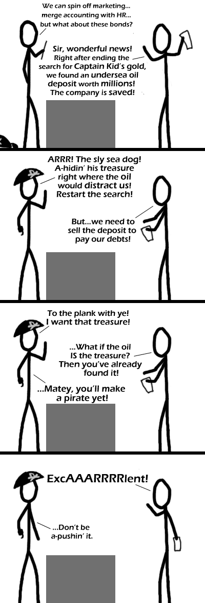

Comic JK 238
When I Feel Like It
⇤
<
?
>
⇥

⇤
<
?
>
⇥
Forum
.
RSS
.
Digg
.
Facebook
.
Reddit
.
Twitter
.
Stumbleupon
Enter your mom's thoughts on number 238 here. Please, no spamming, trolling, or mammalu- oh shit someone beaten me to trolling the page... dsds Better than todays xkcd #edited to conform with correct spelling of xkcd (not XKCD) >By miles... ##how ironic, I had to change 'corect' to 'correct' ;P >>Yea, I gotta agr33 >>>...NOPE.. Only for those afraid of pussy.. sorry kids. >>>>only for the pervs and lesbos was xkcd better- this is much wittier But what would the ninja do with the treasure? Something much less amusing than the pirate. >True. Ninjas don't *need* treasure. >>Unless it's that ninja from N (thewayoftheninja.org) who needs gold to survive Re: the source text - A Pirate would do it with more flair. --Evan (obviously) >True, you wouldn't even see the ninja--the oil would just be gone. >>pirates get gold, ninjas go for the black gold, linjas go for ... >>> ... bill gates' head! >>>>virtual gold >>>>>bandwidth? >>>>>>RAM >>>>>>>&*@$%$@&$@(@.........../i again with the motherfucking messed up reply format. Can't you people do anything right? Best comic in a while. Llol (literally lol) funny! Wow, he used the incredibly lame pun from comments of the previous Pirate CEO comic. ExcAAARRRRlent! International "Talk Like A Pirate Day" on Saturday! Aaarrrr! >Which Saturday? Is This going to be nyaned?